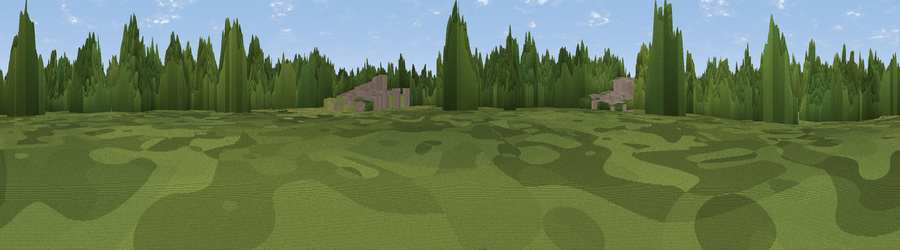

Viewpoint near Richmond
#45934 in England · top 86% of its area beats it · near RichmondThe view, rendered

A 360° render of this exact spot computed from the terrain model, tree cover and land cover — summer colours, afternoon light, calibrated against photographs of famous viewpoints. Real trees, hedges and buildings will differ in detail.
The panorama
Grey silhouette: terrain skyline in each direction (720 bearings, Earth curvature and refraction included). Dashed green: skyline with trees (+15 m) and buildings (+8 m) as obstacles. Blue strip: how far the ground is visible on each bearing.
Where the view opens
Wedge length = distance to the farthest visible ground on that bearing (vegetation-aware). Rings at 10, 25 and 50 km.
What fills the view
64% woodland · 23% built-up · 13% grassland ·
Angular shares of the visible panorama (visual magnitude), not map area. Landscape diversity 0.40 (0–1 Shannon).
Key numbers
More beautiful places nearby
The staircase of upgrades: each row has a higher view potential than everything closer. Driving times are estimates from straight-line distance, calibrated against real road routing — check an actual route before setting out.
| Place | Direction | Drive | Score |
|---|---|---|---|
| Viewpoint near Brentford | N · 1 km | ~3 min | 20.0 |
| Viewpoint near Richmond | S · 2 km | ~6 min | 42.3 |
| Viewpoint near Richmond | S · 3 km | ~8 min | 43.7 |
| Horsenden Hill | NNW · 8 km | ~16 min | 45.0 |
| Viewpoint near Northolt | NW · 9 km | ~18 min | 47.3 |
| Viewpoint near Hayes End | NW · 11 km | ~20 min | 48.1 |
| Harrow on the Hill | NNW · 11 km | ~21 min | 60.7 |
| Box Hill | S · 25 km | ~41 min | 70.4 |
51.47599, -0.29687 · source: osm viewpoint · position refined by local search. Computed location — check access rights before visiting.